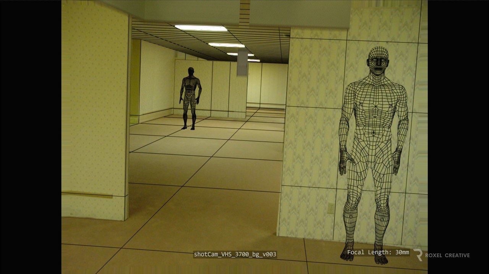

01
後室場景拆解：全三維空間與實拍布景延伸
Roxel Creative 公開《後室》的視效拆解，展示全三維的眩暈房間、迷宮布景延伸，以及部分外景和預演工作。

場景製作 ★★★★★
完整分析
技術／流程變更
影片把實拍布景與數位延伸並列，眩暈房間則使用完整三維環境；場景美術可觀察重複空間如何建立尺度與壓迫感。
Production 影響
拆解同時包含前期鏡頭及動作預演，適合研究正式拍攝前如何規劃空間與鏡頭銜接，而非只看最終合成畫面。
導入測試與限制
報導明確表示尚無其他技術資料，因此不能推定節點設定、使用軟體或製作工時；此則定位為視覺案例參考。
BRIEF｜來源已驗證；證據深度較有限，完整分析會明確區分已知資訊與待驗證事項。